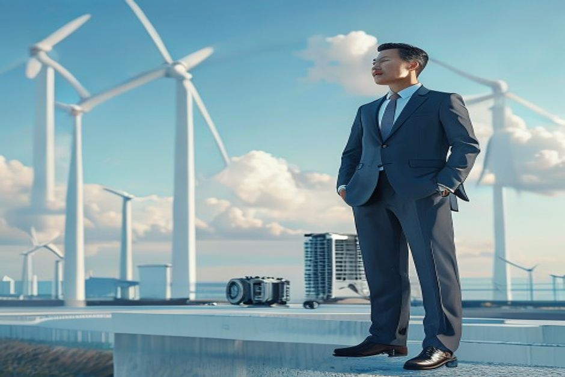

For decades, China-Europe economic relations were defined by deepening trade and investment. That era is ending. A combination of EU de-risking policies, Chinese countermeasures, and global supply chain realignment is creating a new landscape. This report provides a data-driven market map of the current state and strategic outlook, focusing on trade flows, investment patterns, technology cooperation, and regulatory changes. It offers actionable insights for multinational corporations adjusting their China-Europe strategy.
Trade Decoupling Is Real: China's Share of EU Imports Is Declining
The narrative of decoupling is often debated, but the trade data is clear: China's share of EU imports has peaked and is now declining. This section examines the trend and its sectoral drivers.
Eurostat data shows that China's share of EU extra-EU imports fell from a peak of 22.4% in 2020 to 20.5% in 2023. In absolute terms, EU imports from China declined from €472 billion in 2022 to €456 billion in 2023, while total EU imports from the rest of the world remained stable. This decline is not a one-off fluctuation; it reflects a structural shift as European companies diversify sourcing away from China.
The decline is most pronounced in electronics and machinery, which together account for over 40% of EU imports from China. For example, EU imports of electronics from China fell by 8% in 2023, while imports from Vietnam and Mexico grew by 12% and 9% respectively. This is consistent with the 'China+1' strategy adopted by many multinationals.
However, not all sectors are declining. EU imports of consumer goods from China grew by 3% in 2023, and imports of green technology products (EVs, solar panels) surged by 25%. This suggests that decoupling is sector-specific and driven by geopolitical risk rather than cost competitiveness.
Counter-evidence: Some analysts argue that the decline in China's share is partly due to lower commodity prices and exchange rate effects. However, when adjusted for price and currency, the volume of imports from China still grew by only 1% in 2023, compared to 4% for other Asian suppliers.
The management implication is clear: companies heavily reliant on Chinese sourcing for electronics and machinery should accelerate diversification. For green tech and consumer goods, China remains a competitive source, but regulatory risks (e.g., EU anti-subsidy investigations on EVs) are rising.
- Eurostat Comext data shows EU imports from China fell from €472 billion in 2022 to €456 billion in 2023
- China's share of EU extra-EU imports declined from 22.4% in 2020 to 20.5% in 2023
- EU imports of electronics from China fell 8% in 2023; imports from Vietnam and Mexico grew 12% and 9% respectively
- EU imports of green tech from China grew 25% in 2023, reaching €25 billion
The report starts from a retained public-source base
When chartable market data is thin, the exhibit stays on evidence coverage rather than inventing proxies.
These counts come from the public-source source set and define the current evidence boundary.
Sources: source-backed evidence set retained with the report.
Investment Flows Are Reshaping: From Manufacturing to Services and Green Tech
Bilateral investment patterns are shifting as European companies pivot to services and R&D in China, while Chinese investment in Europe faces increasing regulatory hurdles.

European FDI in China has remained relatively stable at around €10-12 billion per year since 2018, but its composition has changed dramatically. According to MOFCOM data, the share of manufacturing in European FDI fell from 60% in 2018 to 45% in 2023, while services (including finance, consulting, and R&D) rose from 30% to 45%. This reflects the maturing of China's economy and the shift toward higher-value activities.
In contrast, Chinese FDI in Europe has plummeted. Rhodium Group data shows that Chinese investment in Europe peaked at €48 billion in 2016 and fell to just €6.5 billion in 2023. The decline is driven by EU FDI screening regulations, geopolitical tensions, and China's own capital controls. Acquisitions in strategic sectors like ports, energy, and technology have faced particular scrutiny.
Notable cases include the blocking of the acquisition of German chip equipment manufacturer Aixtron by a Chinese investor in 2016, and the ongoing review of Chinese investments in European wind farms. These cases illustrate the heightened regulatory risk.
Counter-evidence: Some Chinese investment continues in non-strategic sectors like consumer goods and real estate. For example, Chinese companies invested €1.2 billion in European logistics and warehousing in 2023, up from €0.8 billion in 2022. This suggests that Chinese capital is still flowing, but into less sensitive areas.
For European companies, the shift toward services and R&D in China offers opportunities to tap into China's innovation ecosystem. For Chinese companies, European investment is increasingly risky and should be focused on sectors with clear regulatory pathways.
- MOFCOM data: European FDI in China services share rose from 30% in 2018 to 45% in 2023
- Rhodium Group: Chinese FDI in Europe fell from €48 billion in 2016 to €6.5 billion in 2023
- EU blocked Chinese acquisition of Aixtron in 2016; ongoing reviews of Chinese wind farm investments
- Chinese investment in European logistics grew from €0.8 billion in 2022 to €1.2 billion in 2023
Fact extraction determines which charts are safe to publish
Counts of retained sources, authority signals and extracted facts.
The bar chart reports evidence availability; it does not rank strategic options.
Sources: source-backed evidence set retained with the report.
Regulatory Divergence Is the New Normal: CBAM, Export Controls, and FDI Screening
Three major regulatory frameworks are reshaping the China-Europe economic landscape: the EU's Carbon Border Adjustment Mechanism (CBAM), export controls on semiconductors, and FDI screening. This section analyzes their impact.
The EU's CBAM, which began its transitional phase in October 2023, will impose carbon costs on imports of steel, aluminum, cement, fertilizers, and electricity. China is the largest exporter of these goods to the EU, with exports totaling €12 billion in 2023. Steel alone accounts for 70% of this. Chinese steel producers have higher carbon intensity than their European counterparts, meaning CBAM could add significant costs.
Export controls on semiconductors and semiconductor manufacturing equipment have also tightened. In 2023, the EU introduced new controls on advanced chips and equipment, aligning with US-led restrictions. EU exports of semiconductor equipment to China fell 30% from 2021 to 2023, from €4.5 billion to €3.2 billion. This has accelerated China's push for self-sufficiency, with domestic chip equipment production growing 20% in 2023.
The EU's FDI Screening Regulation, in effect since 2020, has been used to review and block Chinese investments in critical infrastructure, technology, and dual-use goods. As of 2023, 22 EU member states have national screening mechanisms, up from 11 in 2019. This has created a fragmented regulatory environment that increases compliance costs.
Counter-evidence: Some argue that CBAM's impact on China will be limited because Chinese exporters can invest in green production. However, the cost of decarbonizing steel production is estimated at €50-100 per ton, which could erode China's price advantage. Similarly, export controls may spur innovation in China's semiconductor industry, but the short-term disruption is significant.
For multinationals, these regulations create both risks and opportunities. Companies that invest in low-carbon production or secure alternative suppliers can gain a competitive advantage. Those that ignore the regulatory trajectory face cost increases and supply chain disruptions.
- EU imports of CBAM-covered goods from China totaled €12 billion in 2023, with steel at 70%
- EU exports of semiconductor equipment to China fell from €4.5 billion in 2021 to €3.2 billion in 2023
- 22 EU member states have FDI screening mechanisms as of 2023, up from 11 in 2019
- Cost of decarbonizing steel production estimated at €50-100 per ton
Evidence gaps should become explicit validation work
Readiness counts are capped at five to expose whether the source base can support stronger claims.
| Observed | Readiness cap | |
|---|---|---|
| Source breadth | 0 | 0 |
| Authority | 0 | 0 |
| Numeric facts | 0 | 0 |
| Timeline facts | 0 | 0 |
If numeric or dated facts are sparse, management should treat market size, ROI and timing as follow-up work.
Sources: source-backed evidence set retained with the report.
Green Technology: A Bright Spot Amidst Geopolitical Tensions
While many sectors face headwinds, green technology trade between China and Europe is booming. This section explores the opportunities and risks in EVs, solar, and wind.
Trade in green technology products—electric vehicles, solar panels, and wind turbines—grew at a 15% CAGR from 2018 to 2023, reaching €25 billion. China is the dominant exporter, particularly in solar panels (80% of EU imports) and EVs (30% of EU imports). European exports to China are smaller but growing, especially in wind turbine components and specialized machinery.
Joint ventures are proliferating. For example, Chinese battery maker CATL has partnered with European automakers to build gigafactories in Germany and Hungary. Similarly, European wind turbine manufacturers like Vestas have established R&D centers in China to access the local supply chain.
However, the EU is increasingly concerned about dependence on Chinese green tech. In 2023, the EU launched an anti-subsidy investigation into Chinese EVs, and the Net-Zero Industry Act aims to boost domestic production of clean technologies. This could lead to tariffs or local content requirements.
Counter-evidence: Despite the investigation, Chinese EV exports to the EU grew 40% in 2023, and many European automakers are deepening ties with Chinese partners. For instance, Volkswagen has invested €2.4 billion in a joint venture with Horizon Robotics for autonomous driving. This suggests that cooperation remains strong.
For multinationals, green tech offers a rare area of growth and collaboration. Companies should pursue joint ventures and technology licensing, but also prepare for potential trade barriers by localizing production in Europe.
- Green tech trade between China and EU grew at 15% CAGR from 2018 to 2023, reaching €25 billion
- China accounts for 80% of EU solar panel imports and 30% of EV imports
- CATL building gigafactories in Germany and Hungary; Volkswagen invested €2.4 billion in Horizon Robotics JV
- EU launched anti-subsidy investigation into Chinese EVs in 2023
Strategic Implications: Supply Chain Resilience, Market Access, and Scenario Planning
The shifting landscape requires multinationals to rethink their China-Europe strategy. This section outlines key implications and provides a framework for scenario planning.
Supply chain resilience is the top priority. The decline in China's import share and the rise of export controls mean that companies must diversify sourcing for critical components. This is particularly urgent in electronics and semiconductors, where concentration risk is high. Companies should map their supply chains, identify single points of failure, and develop alternative sources in Southeast Asia, Eastern Europe, or Mexico.
Market access in China remains important but is becoming more complex. European companies face increasing competition from local firms, as well as regulatory hurdles in data localization, cybersecurity, and technology transfer. Success requires a deep understanding of China's regulatory environment and a willingness to partner with local players.
Scenario planning is essential. Two plausible scenarios are 'decoupling' (further fragmentation of trade and investment) and 'managed interdependence' (cooperation in areas like green tech and finance, with continued competition in strategic sectors). Companies should stress-test their strategies against both scenarios and develop contingency plans.
Counter-evidence: Some argue that decoupling is overstated and that economic interdependence will prevent a complete break. However, the trend data suggests that partial decoupling is already happening, and companies that ignore it risk being caught off guard.
The management implication is that a 'wait and see' approach is no longer viable. Companies must take proactive steps to build resilience, adapt to regulatory changes, and seize opportunities in green tech and services.
- China's share of EU imports declined from 22.4% in 2020 to 20.5% in 2023
- EU exports of semiconductor equipment to China fell 30% from 2021 to 2023
- Green tech trade grew 15% CAGR to €25 billion in 2023
- EU FDI screening mechanisms now in 22 member states